Top 100 Debut Albums (Part Three: 60 to 41)
Welcome to the third part of our Top 100 Debut Albums feature. Please use the links below to discover the rest of the feature. Please note: parts 4 and 5 will be published on Thursday and Friday.
[Part One: 100 to 81] [Part Two: 80 to 61] [Part Three: 60 to 41] [Part Four: 40 to 21] [Part Five: 20 to 1]
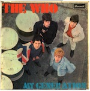60. THE WHO
My Generation
(Brunswick, 1965)
The Who might have been just another exceptionally energetic R&B combo circa 1965, but for the inclusion of several sharp and pop-errific Townshend originals that elevate the band’s first album to next level. Pete would only get better, but My Generation and The Kids Are Alright already show him at the top of his game, and right out of the gate they make you wonder how only three instrumentalists could make such a big sound. (Alan Shulman)
Playlist: The Kids Are Alright
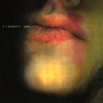59. PJ HARVEY
Dry
(Too Pure, 1992)
In 1992, British Indie rock was in a parlous state indeed. The euphoria of the Madchester scene had waned and the sorrowful likes of Flowered Up and Cud populated the weeklies. (Saviours like Primal Scream and My Bloody Valentine were rare beasts, seldom seen.) The media-created Britpop ‘phenomenon’ was still two more years away. The impact of Dry was like a seismic shift in the consciousness of indie-kids. This was serious rock music made by a woman who sang like her life depended on it. The music was sinuous and sensual, while still retaining enough grit and dirt to keep the grungers happy. Harvey’s guitar playing is often overlooked, but on tracks like Sheela-Na-Gig or Joe it flows like a swollen river. The real star instrumentally is drummer Robert Ellis, whose playing has an understated fluidity that compliments Harvey’s songs – the final track, Water, is one of the best rock songs in 5/4 of all time. (David John Wood)
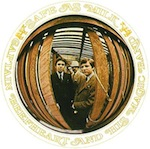58. CAPTAIN BEEFHEART & HIS MAGIC BAND
Safe As Milk
(Buddah, 1967)
While Captain Beefheart may now be known the for the odd-ball extremities and outright weirdness of records such as Trout Mask Replica, this debut finds him and his Magic Band in extremely accessible form. A record rooted deep in the delta blues, it also has a rugged charm that creates an almost garage-like quality that would have slotted perfectly onto the first Nuggets record. It’s an electrifying expulsion of a record and succeeds in capturing an energy, intensity and rabid passion that you would expect and hope from all debut albums. The beauty of Safe As Milk is the variation; what could be a derivative blues record is completely tipped on its head by moments such as the weird and wonderful Electricity and the painfully tender I’m Glad, the latter of which could take on anything The Zombies produced. With the passing of the great man last December, Safe As Milk is a powerful reminder of the magnificence and depth that consisted during the birth of Captain Beefheart & His Magic Band. (Daniel Dylan Wray)
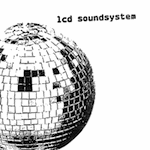57. LCD SOUNDSYSTEM
LCD Soundsystem
(DFA, 2005)
LCD Soundsystem are (were) a real ‘love it or hate it’ affair. All three of their albums greatly divided opinion, leading some to proclaim the band amongst the greatest artists of our time, while others freely admitted that couldn’t understand their appeal. Their 2005 self-titled début, which appeared seventh in No Ripcord's albums for that year, produced no fewer than seven singles and clocks in at over one hours and forty minutes long. Drawing heavily on disco and punk influences, it's a groundbreaking, experimental tour de force; a complex, yet remarkably accessible piece of music. (Craig Stevens)
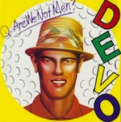56. DEVO
Q: Are We Not Men? A: We Are Devo!
(Warner Bros., 1978)
Championed by Brian Eno and David Bowie before they even released their debut, Devo seemed destined to achieve pop superstardom. This never really happened, and they were dropped from Warner Bros after a few albums (despite producing the top 40 hit Whip It). What they did manage to achieve, however, was to carve a strange, idiosyncratic niche for themselves, gathering a rabid cult fanbase in the process. For Devo have always been about more than the music: their theory of de-evolution, their cynical social commentary, their bizarre stage shows, their distinctive aesthetic. This album is a great introduction to the weird world of Devo, featuring the best pop song to have prominent sections in 7/8, a song which refers to the average 9-5 worker as a mongoloid, and their dramatically re-imagined version of the Stones’ (I Can’t Get No) Satisfaction. (Andrew Hirst)
Playlist: Gut Feeling / Slap Your Mammy
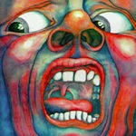55. KING CRIMSON
In The Court of the Crimson King
(E.G./Island, 1969)
While most progressive rock outfits saw themselves starting with something more mundane, King Crimson solidified their position on the rock landscape with this powerful debut. From the anthemic The Court of the Crimson King to the straight-up prog rock of 21st Century Schizoid Man, the album captures the movement and the band as it went on to far more experimental pastures. As a rock album, In the Court of the Crimson King is dynamic and majestic – even when it gets a bit weird – but as a genre piece, it set the stage for decades of albums. (Matt Montgomery)
Playlist: Not available on Spotify
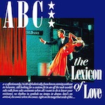54. ABC
The Lexicon Of Love
(Neutron, 1982)
On opening track Show Me, Martin Fry announces his arrival as a new, intelligent brand of pop star. The Lexicon of Love goes some way to supporting his bold claims. It’s a wonderful album of lovingly crafted pop music, the like of which we’ll probably never see again in this manufactured age of TV talent shows and Internet buzz. ABC were hard-working musicians with a depth of musical knowledge and a clear vision of what they wanted to achieve. Yes, they grew up with Bowie, Roxy Music and punk, but unlike the leading lights of the post-punk scene they had the courage to also embrace less fashionable styles such as disco and funk. The Lexicon of Love was the result of a unique fusion of influences in a specific city at a specific time. It's very much a one-off record and despite the efforts of countless imitators – and ABC themselves – no British pop act came close to even matching The Lexicon of Love in the 1980s. (David Coleman)
Playlist: Tears Are Not Enough
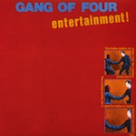53. GANG OF FOUR
Entertainment!
(EMI, 1979)
I’d love to have been around in 1979 to hear the jarring stabs of Andy Gill’s guitar over the top of the poundingly intricate rhythm section of Dave Allen and Hugo Burnham for the first time. Those first few notes of Ether must have been a mind-blowing experience. They managed to make furious yet danceable music, creating an intensity that not even the most ostensibly “brutal” death metal bands come close to matching. Whereas most death metal bands sing about devils, entrails and other disgustingly clichéd nonsense, Gang of Four express sheer social rage, taking shots at the worst aspects of modern Western society: sexism, racism, materialism, mass-media, advertising. Their rage is a rage we can all feel. And, best of all, we can dance to it at the same time. (Andrew Hirst)
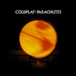52. COLDPLAY
Parachutes
(Parlophone, 2000)
Given their now stadium-sized ambition, it’s easy to forget that Coldplay were once a relatively quiet, understated and altogether more interesting band. Even then they were widely criticized for being bland, but for those who could relate to all the melancholy, Parachutes was a deeply affecting listen – and most importantly, it didn’t sound like anything else at the time. There was plenty, too, for the avid musician to take away: weird guitar tunings were something of a specialty for Chris Martin, while Jonny Buckland’s reverb-drenched lead guitar created a haunting backdrop. Nowadays they may be more concerned with filling arenas, or maybe they just got happy – but back then, they were nothing less than sincere. (Joel Stanier)
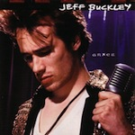51. JEFF BUCKLEY
Grace
(Columbia, 1994)
Being a fan of Grace used to be like being in an exclusive club that hardly anyone knew about. However, it’s been so influential and marketed so heavily, the world and his wife now have an opinion on Jeff Buckley. But this shouldn’t detract from the sheer potency and power of his only studio album. Grace is a collection of last-minute songs, cover versions, songs written for other projects and self-penned ballads, yet somehow creates a feeling of cohesion throughout its 50 minutes. Jeff Buckley’s vocals on Grace are astonishing; whether it be his tender rendition of Leonard Cohen’s Hallelujah or his ear-shattering howl from the id on the title track, he’s never anything less than stellar. A mournful record and an appetite-whetting taste of what he could have achieved, Grace has inspired thousands and is an essential purchase for any record collection. (Joe Rivers)
Playlist: Lover, You Should’ve Come Over
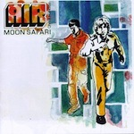50. AIR
Moon Safari
(Virgin, 1998)
Released at the height of the chillout movement in 1998, Air’s Moon Safari remains not just a career-best album for Air, but one of the finest downtempo electronic albums ever made. The title is a perfect description of the album’s sound; an exploration of other-worldly, lighter-than-air electronica, in all its forms. From the fade-in on opening track La Femme D'argent to the final, single note played by the jazz organ on Le Voyage de Pénélope, Moon Safari is a consistently brilliant, gorgeous understatement of chilled out euphoria. (Craig Stevens)
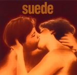49. SUEDE
Suede
(Nude, 1993)
“Because we’re young, because we’re gone,” begins So Young, the opening track on Suede’s self-titled debut. Has a band ever set their stall out so succinctly in one line? Suede took the druggy glam-rock and androgynous sexual mystique of 1970s Bowie, gave it some more amyl nitrate and dragged it into 1993. This is no pastiche though; Brett Anderson and Bernard Butler are the 1990’s Morrissey and Marr, the latter’s intricate guitar lines weaving around the former’s tales of debauchery, questionable morals and Caligula-esque pursuits. There’s also something triumphant and vital about these songs too although – like many albums on this list – they never made a record as good again. But Suede is still a time-capsule to the early 90s, the dawn of Britpop and a time when it seemed anything was possible. Sadly, we now know that wasn’t the case; so young and so gone indeed. (Joe Rivers)
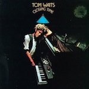48. TOM WAITS
Closing Time
(Asylum, 1973)
Closing Time isn’t exactly what you’d expect from Tom Waits. But if you put it next to, say, Rain Dogs, it becomes a much easier proposition to recognize that scraggly-haired songwriting genius separated from the beautiful mess he’s recognized for. Blues and jazz abound, but there’s no sign of the weird: But who’s on deck is the storytelling, moody Tom Waits that cuts through the whisky-drenched atmosphere. Hell, at times on Closing Time, Tom Waits seems like a vaguely off-key (and fairly demented) Billy Joel, and that he escaped some of this safe music is a miracle of modern man. Still, as debuts go, this one’s fascinating if just to get a glimpse of who this man was before he became the legend he is today. (Matt Montgomery)
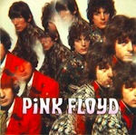47. PINK FLOYD
The Piper At The Gates Of Dawn
(EMI, 1967)
Whoever told Syd Barrett he could get away with writing and performing a song like Bike? Nobody, of course, because Barrett was a true original who bent the ordinary rules of pop songwriting to the breaking point. His heavy use of chromaticism and shifting harmony make him the Chopin of rock and roll and is what has secured this album’s place in history. It’s a genuine tragedy that his skewed approach to music likely reflected or foretold his fracturing mental state. The remaining Floyds, ever resourceful, were able to find a Plan B and left a legacy we are lucky to have, but only this album, and scattered solo work, remains to make us wonder what could have been. (Alan Shulman)
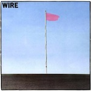46. WIRE
Pink Flag
(Harvest/EMI, 1977)
If you take a first impression into account, then Reuters, the opening track from Wire’s Pink Flag, misleads in its ploy to embrace brevity. The British band leisurely turn up a shuddering bass line until a disconcerting guitar crunch comes into the fold, laying bare a different breed of punk that instigates authority with steadiness, not velocity. The biggest surprise came in how every song that followed discharged a series of short-circuited bursts, cramming fully formed hooks in as little as thirty to ninety seconds. Headed by Colin Newman’s gnarled vocals, they would apply primal chords and skew them into minimal sound sculptures, unwittingly presaging the more outlandish side of pop music. Dressing Oxford cloth button-down instead of tattered t-shirts, Wire legislated a radical change in how punk should be consumed by the masses come 1977 – sharp, short-tempered anthems as far removed from any political affections, but just as boisterous. (Juan Edgardo Rodriguez)
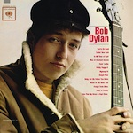45. BOB DYLAN
Bob Dylan
(Columbia, 1962)
You would be hard pressed to find any current artist who has not been affected by Bob Dylan in some way (well, maybe LMFAO, but they hardly count as artists). For most people the Dylan listening experience begins with 1963’s The Freewheelin’ Bob Dylan. Few people know that Dylan’s debut was recorded two years earlier, and includes an excellent selection of folk standards. Dylan’s debut is far from his strongest record, but it displays the venerable poet at a point in his career before he reached superstardom. Bob Dylan only features two original recordings, the rest being old well-loved folk covers. And by the time Columbia released the record in early 1962, Dylan had already surpassed the Guthrie-inspired standards, and had begun writing all of his own material. On Bob Dylan we don’t see Dylan the master songwriter, but instead Dylan the skilled and more importantly, confident guitarist and vocalist. While the record does not stand out in its entirety, Dylan’s version of House of the Risin’ Sun may be the best ever recorded. (Lukas Clark-Memler)
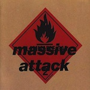44. MASSIVE ATTACK
Blue Lines
(Virgin, 1991)
Influenced by the dub scene of the 80s and their own sound system background, the nocturnal grooves of Massive Attack’s Blue Lines filtered American hip-hop and soul through the prism of UK club culture. Craig Armstrong’s masterful string arrangements add an orchestral air over clattering beats and heavy bass lines which anchor the record to the dancefloor. Aided by the soulful whine of Shara Nelson and rootsy honk of Horace Andy, Blue Lines transcends the media-invented ‘trip-hop’ tag and lays claim to being one of the most influential dance albums ever made. (Gary McGinley)
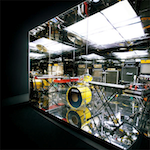43. BATTLES
Mirrored
(Warp, 2007)
Mirrored came out of nowhere, in more ways than one. Initially a side-project for all the members, it was released some three years after the band’s early EPs – and nobody could have quite predicted quite how groundbreaking it would be, nor the extent to which it would eclipse anything else the band members had done. Mirrored sounded like the future then, and it still does. At its heart lies a very human intelligence, but it’s difficult to see what more could have been done to make it sound any less organic. Every last pluck of a guitar string or vibration of a vocal chord seems to have been digitally sodomised in some way, while John Stanier’s excellent drumming is surgically precise. The end result is a fantastically individual record that is a must-have for fans of experimental music. (Joel Stanier)
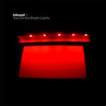42. INTERPOL
Turn On The Bright Lights
(Matador, 2002)
The early part of the last decade was a bleak time for music, despite the best efforts of the press to claim otherwise. The bottom was already starting to fall out of the market and such uncertainty triggered a wave of nostalgia that we’ve still not quite managed to shake off. For the most part what came from this was throwaway at best, and outright trash at worst. Not in Interpol’s case though, as the New Yorkers immediately stood out from their contemporaries thanks to their impeccable style, immaculate atmospherics and artfully gibberish lyrics (which were nevertheless always delivered with complete conviction). Perhaps most important though was their surprisingly accomplished rhythm section; while everyone else went for ragged and tinny, Interpol’s sound had a real feeling of depth to it. Things have gone steadily downhill for the band since then, but at least we’ll always have this. (Mark Davison)
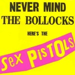41. SEX PISTOLS
Never Mind The Bollocks, Here’s The Sex Pistols
(Virgin, 1977)
Never Mind the Bollocks, Here’s the Sex Pistols can be called the greatest punk album of all time. But it doesn’t care. And neither do The Sex Pistols. And that’s what’s so goddamn punk about it. It disregards the queen and her elitism, it forgets about all order and vision of romanticism in favor of its own flavor of anarchy, still to this day vibrating with the filthy anger of Johnny Rotten, Steve Jones, Paul Cook and the late, great, notorious Sid Vicious. It doesn’t take sides, it makes its own side. The Sex Pistols are the pioneers of punk, this being illustrated by the fact that Never Mind the Bollocks, Here’s the Sex Pistols was their only album, yet one of the most remembered in rock history. Though we regard it as an honor, the Sex Pistols don’t give a fuck about being on this list or being ranked in regard to others. They just want to break something. Hell, so do we. (Luredo Marbery)
. . .
[Part One: 100 to 81] [Part Two: 80 to 61] [Part Three: 60 to 41] [Part Four: 40 to 21] [Part Five: 20 to 1]
30 November, 2011 - 08:05 — No Ripcord Staff